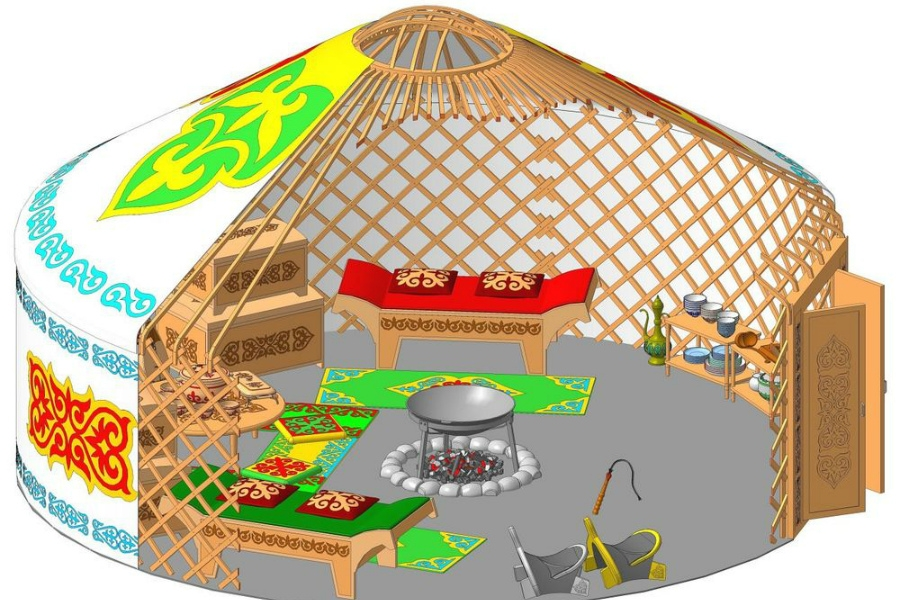
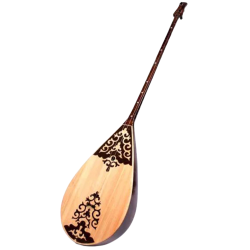
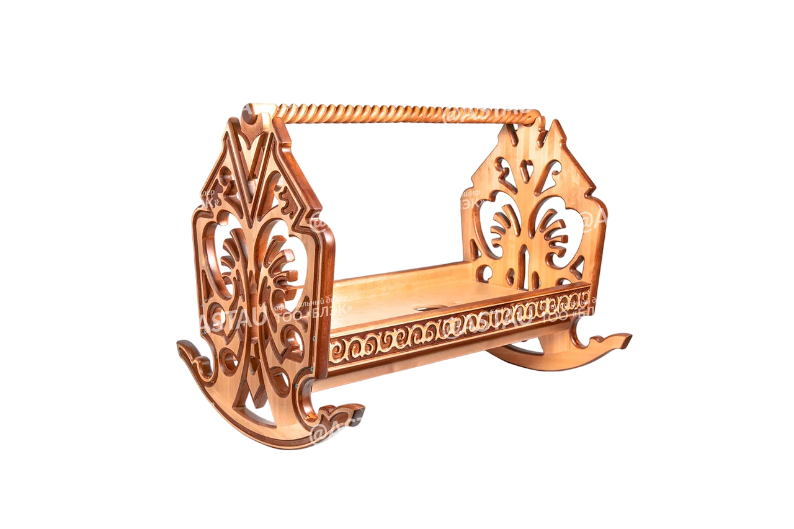

<app-home-page-header></app-home-page-header>
<div class="container" style="padding-bottom: 50px">
  <div class="upperPart">
    <div class="title-qazaq-tili">
      <div class="word">
        <h1>Qazaq</h1>
      </div>
      <div class="word2">
        <h1>Dasturi</h1>
      </div>
    </div>

  </div>

  <div class="middlePart">
    <!--  -->
    <div class="dombyra" style="position: absolute;">
      
    </div>
    <div class="besik" style="position: absolute;">
      
    </div>
    <div class="sandyk" style="position: absolute;">
      
    </div>
    
    
     
  </div>

  <!-- <div class="lowerPart">
        <div class="firstQuote">
          <div class="box">
            <div class="box-inner">
              <p>
                Ғылыми, әдеби тілдік және тарихи тұрғыдан қарағанда қазақ тілі -
                түркі тілдерінің ішіндегі өте әсем, өте бай тілдердің бірі.
              </p>
              <div class="author">
                
                <p>Йоханнес Бенцинг</p>
              </div>
            </div>
          </div>
        </div>
      </div> -->
</div>
<app-home-page-footer></app-home-page-footer>
